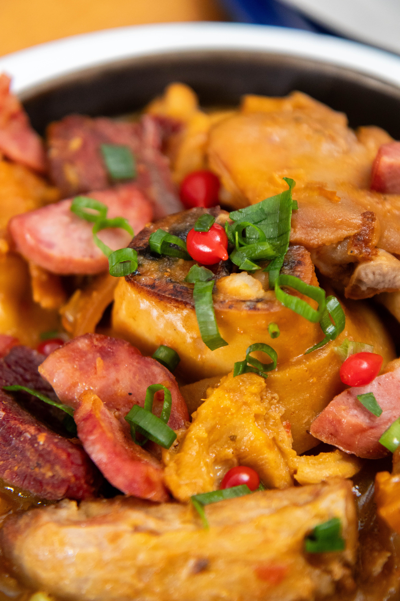
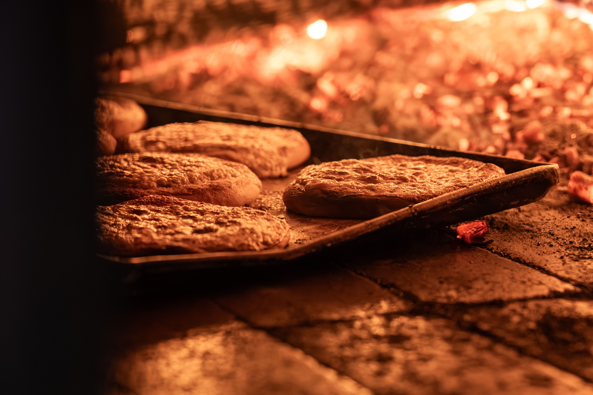
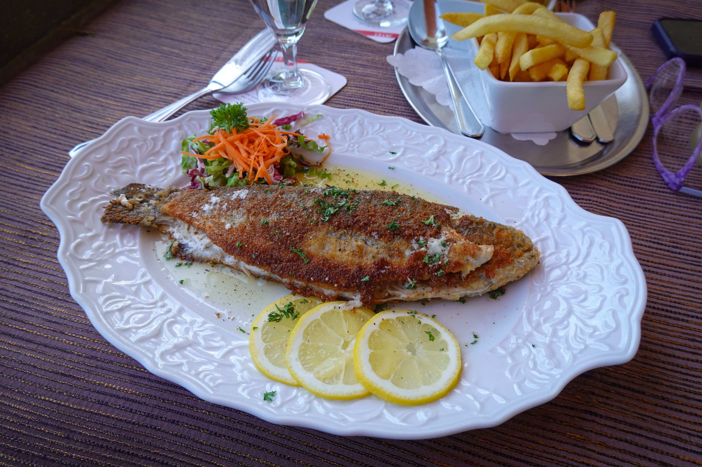
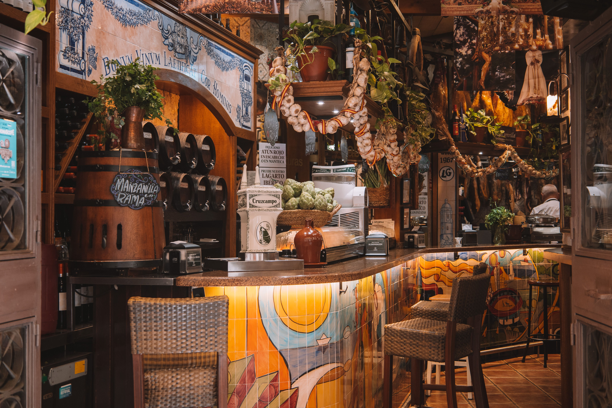

Estofado de Brumaria
Uno de los platos más populares entre viajeros y habitantes locales. Combina carne, raíces de temporada, verduras y una mezcla de especias cocinadas lentamente durante varias horas.

La gastronomía de Elarion es tan diversa como sus paisajes. Cada región desarrolló sus propias recetas, ingredientes y tradiciones, combinando productos conocidos por los viajeros con sabores imposibles de encontrar en cualquier otro mundo. Desde especias cultivadas en los bosques del norte hasta bebidas fermentadas en antiguas bodegas subterráneas, comer en Elarion también es una forma de viajar.
Uno de los platos más populares entre viajeros y habitantes locales. Combina carne, raíces de temporada, verduras y una mezcla de especias cocinadas lentamente durante varias horas.

Un pan tradicional preparado en hornos construidos directamente sobre roca caliente. Su exterior es crujiente y su interior conserva una textura suave. Se suele servir acompañado de mantequilla de hierbas o Miel de Niebla.

Pescada en los fríos lagos del norte, la trucha se prepara habitualmente sobre brasas y se condimenta con Sal de las Montañas Azules y hierbas locales. Es uno de los platos más recomendados para quienes visitan la región por primera vez.

Una pequeña flor plateada que crece únicamente durante las noches de luna llena. Sus pétalos secos se utilizan como especia y aportan un sabor suave y ligeramente dulce a sopas, carnes y bebidas calientes.
Extraída de antiguas cavernas en las regiones montañosas de Elarion, esta sal posee un característico tono azulado. Es uno de los condimentos más utilizados en la cocina tradicional y suele acompañar platos de carne y verduras asadas.
Una especia de intenso color rojo que crece cerca de zonas volcánicas. Su sabor comienza siendo dulce, pero deja un picor que puede durar varios minutos. Se recomienda utilizar con moderación.
Producida por pequeñas abejas que habitan los bosques húmedos del oeste, posee una textura ligera y un aroma herbal. Se utiliza en postres, bebidas y algunas salsas tradicionales.

Ubicada en uno de los caminos principales que conectan las antiguas regiones del reino, El Grifo Dormido se ha convertido en una parada obligatoria para viajeros, comerciantes y aventureros. Este mes recomendamos probar su Estofado de Brumaria, preparado con una receta transmitida durante generaciones, acompañado por una jarra de Cerveza de Raíz Negra. La taberna también cuenta con habitaciones para viajeros, música en vivo durante las noches y una vista privilegiada hacia los bosques del oeste. Recomendación del viajero: llegá temprano. Los rumores dicen que, después de la medianoche, las mejores historias comienzan a circular entre las mesas.